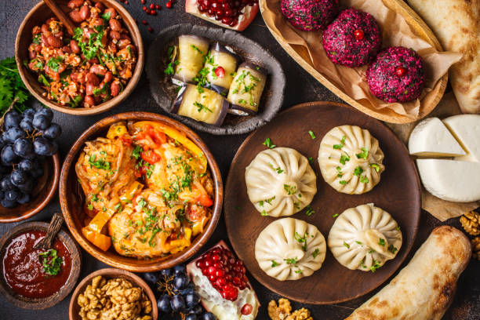
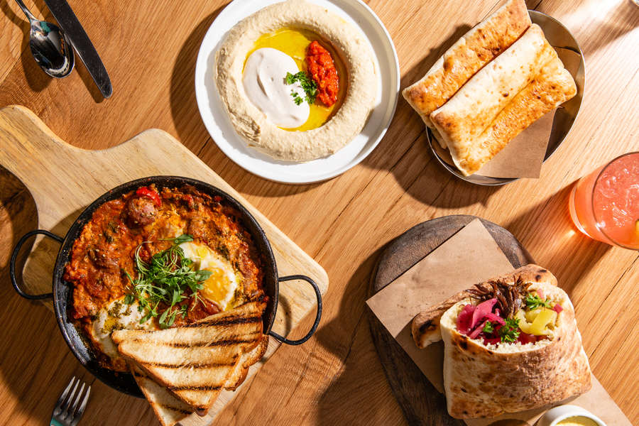

DACHA DINER
DINER
Eastern European cuisine
Eastern European cuisine encompasses many different cultures, ethnicities, languages, and histories of Eastern Europe. The cuisine of the region is strongly influenced by its climate and still varies, depending on a country. For example, countries of the Sarmatic Plain (Belarusian, Russian and Ukrainian cuisine) show many similarities.According to the Ethnic Food Lover's Companion, all significant Eastern European cuisines are closely connected with the political, social and economic revival of the region following the long periods of historical turmoil. "These are substantial cuisines, meaty, rooty, smoky – part comfort food, part extravagance." Their main ingredients include eggs, used most frequently in doughs and pastries; dairy products (with yogurt and cheese among the staples); grains, including rye, barley, wheat, buckwheat and millet used in kashas and in the making of breads; vegetables, in cold storage and in pickling; fish (salmon, pike, carp and herring), birds and poultry (chicken, duck, goose, partridge, quail, turkey); red meats such as veal, beef, pork and mutton; and plentiful fruits including pears, plums, cherries, raspberries, pomegranates, dates, and figs, used for desserts and a variety of liqueurs.
The nutritional index of traditional dishes is generally high cholesterol, high sodium, and high fat.

Jewish cuisine
Jewish cuisine refers to the cooking traditions of the Jewish people worldwide. It has evolved over many centuries, shaped by Jewish dietary laws (kashrut), Jewish festival and Shabbat (Sabbath) traditions.Jewish cuisine is influenced by the economics, agriculture and culinary traditions of the many countries where Jewish communities have settled and varies widely throughout the whole world. The history of Jewish cuisine begins with the cuisine of the ancient Israelites. As the Jewish diaspora grew, different styles of Jewish cooking developed. The distinctive styles in Jewish cuisine are Ashkenazi, Sephardi and Mizrahi. There are also dishes from Jewish communities from Ethiopia, Iran and Yemen. Since the establishment of the State of Israel in 1948 and particularly since the late 1970s, a nascent Israeli "fusion cuisine" has developed. Jewish Israeli cuisine has adapted a multitude of elements, overlapping techniques and ingredients from many diaspora culinary traditions.
